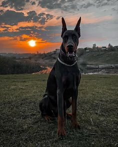

Doberman
El dóberman (en idioma alemán y oficialmente dobermann) es una raza canina originaria de Alemania. Esta raza debe su nombre al alemán Karl Dobermann, que, a finales del siglo xix, toma la iniciativa de crear una nueva raza de perro que sirviera eficazmente a su difícil trabajo como recaudador de impuestos. Para conseguir el nacimiento de esta nueva raza, mediante cruces de otras razas caninas como el Rottweiler, el Beauceron, el Weimaraner, el Manchester terrier, o el Pinscher, entre otros.
La principal función de esta raza en sus orígenes fue la de proteger a su criador frente a potenciales asaltantes interesados en la recaudación de los impuestos que solía portar. Actualmente sus principales funciones son: perro policía, perro militar, perro de defensa y seguridad, perro guardián, entre otras funciones, según el uso que le den las fuerzas y cuerpos de seguridad y el ejército.

- Historia
- Nombre
- Altura
- Aspecto
- caracteristicas de la raza
- Otras caracteristicas
Nombre
En el origen de la raza, este perro se conocía como Thuringer Pinscher o Polizeilicher Soldatenhund (perro soldado policial), pero alrededor de 1900 se impuso el nombre de dobermann pinscher en honor a su creador: Karl Friedrich Louis Dobermann. Finalmente se le acabó suprimiendo la terminación pinscher y, en general hoy día se le conoce como dóberman simplemente.
Historia
Esta raza debe su nombre a Karl Friedrich Louis Dobermann, un vigilante nocturno y recaudador de impuestos que entre 1834 y 1894, se encargaba de la custodia de una perrera en la ciudad de Apolda (Turingia, Alemania).
A partir del primer año de vigilancia (alrededor de 1860), comenzó a necesitar un perro para defenderse, pero ninguna de las razas a las que podía acceder era de su entera satisfacción. Comenzó la creación usando un temido perro pastor de turingia llamado Schnuppe, junto con los extintos perros de carnicero (parientes del Rottweiler y Boyero de Appenzell) y perros de muestra (similares a Weimaraner, pero sin raza definida). Después de estos cruces, intervinieron en la formación de la raza un Manchester terrier y una hembra negra de Galgo inglés.89 Algunas fuentes todavía relatan también la posible participación del antiguo Dogo alemán.
Hay ciertas controversias en relación con qué perros realmente se utilizaron en el desarrollo del dóbermann. De este enmarañamiento de argumentos se puede sacar una contradicción, que las mismas personas que debatieron sobre esto son las que afirmaron una no relación de sangre entre el Manchester terrier y el dóbermann. Posiblemente los estudios genéticos puedan algún día dar más información exacta sobre el origen del dóbermann. Lo que se sabe con certeza es que se cruzaron diversos tipos de perros regionales con temperamento para defensa, y así surgió el perro de Louis Dobermann.
Karl Friedrich Louis Dobermann falleció en 1894, cuatro años antes de que la raza fuera reconocida.
Aspecto
Tiene el cuerpo cuadrado, la cabeza tiene los planos del hocico y del cráneo paralelos, depresión frontonasal (stop) muy ligera, ojos pequeños y oscuros. Orejas de inserción alta, cuello largo y elegante, el cuerpo es musculoso, aunque no se le note, con los miembros rectos, la línea superior es recta y el pelo corto pegado al cuerpo.
Altura y peso
Los machos tienen una altura de 68 a 72 cm7 y un peso de 40 a 45 kg7 y las hembras una altura de 63 a 68 cm7 y un peso de 32 a 35 kg.7
Caracteristicas de la raza
Tipo de pelo: duro, denso, liso, bien pegado y uniformemente repartido sobre el cuerpo. No se permite lanilla interna.
Largo del pelo: corto
Color: Existen diversos estándares para la raza dependiendo de las distintas organizaciones caninas, lo cual puede implicar diferencias en los colores admitidos para una misma raza. Para el dóberman, los diferentes estándares indican lo siguiente:
Colores admitidos por la Federación Cinológica Internacional:
Negro y fuego(***).
Marrón y fuego(***).
Fuego: marcas bien delimitadas de color rojo-óxido. En el hocico, mejillas, cejas, garganta, dos manchas en el pecho, en los metacarpos, los metatarsos y pies, en la parte interna de los muslos, región perineal y protuberancias ilíacas.
Las manchas blancas se consideran defectos eliminatorios en concursos de belleza.
Otra caracteristicas
Promedio de vida: de diez a trece años.
Promedio de cachorros por camada: ocho cachorros por camada.